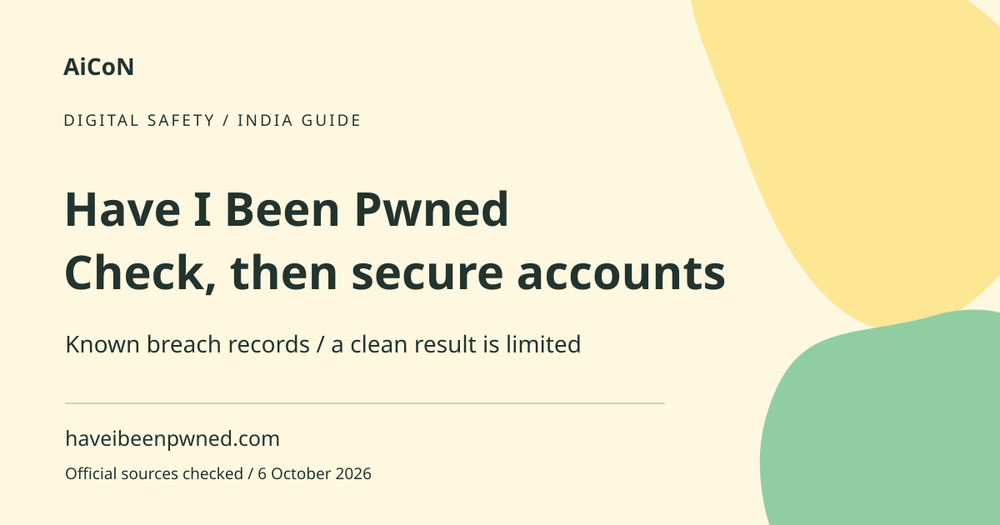

Have I Been Pwned: email breach checks and next steps
Have I Been Pwned searches the breaches loaded into its database for an email address. A match is a reason to check and secure affected accounts. No match is not a guarantee that an account has never been compromised.

What does pwned mean?
The term means compromised in this context. A breach is an incident where information was exposed, but the type of exposed data varies. An entry can concern email addresses, passwords or other information. Read the breach description rather than assuming every result means a usable password is currently public.
How to use it, step by step
- Open haveibeenpwned.com directly. Do not start from a message claiming to show your breach result on an unfamiliar site.
- Enter your own email address in the email-breach checker. This task does not require your email password.
- Read each returned breach description and date. Note the affected service and data types.
- Sign in to the affected service through its official app or website, not through a link in an alarming message.
- Change any exposed or reused password to a unique one. Also change it on other accounts where you reused it.
- Review security settings and enable an appropriate second factor where available. Keep recovery options secure.
- If you want notifications, use the official signup route and complete any ownership verification it requires.
- Keep a private record of your cleanup. Do not publicly share breach results or other people's email histories without permission.
Free checking and separate paid services
The public site provides email breach checking and a notification route. Business, API and other subscription services are different from checking your own email on the public page. You do not need to buy a promoted password-manager product merely to interpret a result. Choose security tools according to your needs and verify current pricing separately.
What a clean result does not mean
The result only covers breaches loaded into the service. Some incidents are unknown, incomplete or not searchable in the same way. An account can also be compromised through phishing or malware without appearing in a public breach database. Continue using unique passwords and checking suspicious account activity even after a clean search.
What a match does not mean
A historical match does not prove someone is currently logged into your account. A breach date and a database addition date can differ. The account may already have been secured, or exposed data may not include passwords. Still, reused credentials can create risk elsewhere. Act on the actual data types and current account state rather than panicking at a large breach count.
Password reuse is the main cleanup problem
Attackers can try a known email/password pair on unrelated services. That is why changing only one affected password may not be enough. A password manager can help create different strong credentials for each account. Do not store your password list in an unsecured shared document or send it to someone offering breach cleanup.
Use email checking, not secret sharing
This guide concerns the email checker. Never paste an account password into an email-search field, AI chat or support conversation. If you use a separate password-checking tool, understand its design and access it through an official route. A caller asking for your current password to confirm a breach is not following the email-check workflow.
For families and workplaces
Help a relative only with their permission and avoid exposing their results in a group chat. For a company domain, use its authorised security process rather than checking and publishing colleagues' personal information. Record the steps taken, not secret credentials. A data breach can also expose phone numbers or addresses, so be alert to follow-up impersonation.
Frequently asked questions
Does no pwnage mean I am safe?
No. It means no match in the searched loaded data.
Does a match prove my password is exposed?
Check the breach's listed data types; do not assume.
Should I change a reused password elsewhere?
Yes. Use a different strong password for each account.
Does the email checker need my password?
No. Never provide it for an email search.
Official sources
Checked 6 October 2026. Expanded from an AiCoN short post delivered 5 October 2026. Portal screens and rules can change.